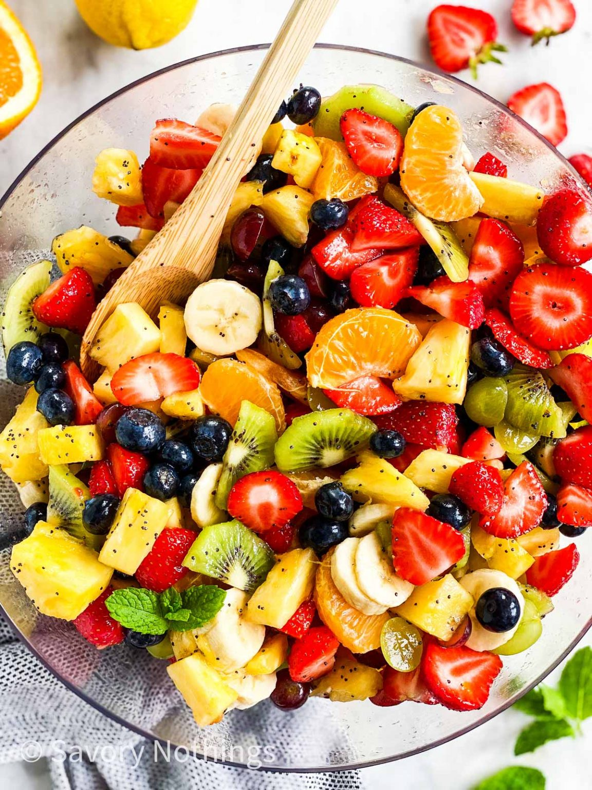

FruitSalad

Description
Juicy, sweet, healthy and delicious, this tropical Fruit Salad recipe is sure to become part of your regular summer recipe repertoire. Quick to prepare, easy to digest and packed with nutrients, fruit salads are perfect for this warmer weather.
Ingredients
- 2 mangoes
- 1 small papaya
- 10 to 12 strawberries
- 3 to 4 figs
- 2 to 3 chikoo
Steps
- Remove and discard any seeds, stems or peels that are inedible. Chop all fruit into similarly sized pieces
- Peel and chop the 2 bananas when you have completed chopping all the other fruits.
- Add the chopped fruits to a mixing bowl.
- Add the pomegranate arils.
- Now add the chopped or sliced nuts like cashews, pistachios, almonds or walnuts.
- Add honey, if using.
- Gently mix the fruits very well.